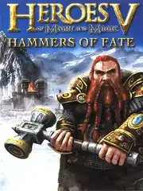

Heroes of Might and Magic V: Hammers of Fate
Heroes of Might and Magic V: Hammers of Fate
Detalles
 |
|
| Tiempo de juego | 20s |
| Última actividad | 17/11/2025 17:58:40 |
| Añadido | 17/11/2025 17:57:19 |
| Modificado | 17/11/2025 17:59:40 |
| Estado de finalización | Jugado |
| Librería | Playnite |
| Fuente | |
| Plataforma | PC (Windows) |
| Fecha de lanzamiento | 14/11/2006 |
| Puntuación de la Comunidad | 79 |
| Puntuación de la Crítica | 50 |
| Puntuación de usuario | |
| Género | Role-playing (RPG) Strategy Turn-based strategy (TBS) |
| Desarrollador | Nival Interactive |
| Editor | |
| Característica | Multiplayer Single Player |
| Enlaces | Steam |
| Tag | |
Descripción
Después del regreso triunfal con Heroes of Might & Magic V, que trajo la saga a un 3D espectacular, llegó la primera gran expansión. Y no fue una expansión cualquiera: Hammers of Fate metió una facción completamente nueva.
¡BIENVENIDOS, ENANOS!
Esta expansión introduce la facción de la Fortaleza (Fortress). Un ejército de enanos tercos, barbudos, con una defensa de la puta madre y una sed de cerveza inigualable. ¡Era la facción "tanque" que faltaba!
¿Qué trajo de nuevo?
- La Facción Enana: Unidades nuevas y zarpadas. Defensores, Portadores de Escudos, Sacerdotes Rúnicos, Berserkers rabiosos y los increíbles Señores del Trueno (Thunder Thanes). ¡Y Dragones de Magma!
- ¡MAGIA RÚNICA!: La mecánica única de los Enanos. Sus héroes no tiraban tantos hechizos convencionales. ¡Usaban "Runas"! Podías, en medio del combate, activar una runa en una de tus unidades para darles buffs al toque: más ataque, más defensa, atacar dos veces... ¡una locura táctica!
- Nuevas Campañas: Una historia larguísima que seguía los eventos del juego base, pero ahora centrada en el conflicto de los Enanos y su ascenso.
- Caravanas: ¡Se terminó tener que llevar los bichos a mano! Podías "enviar" tropas desde tus castillos a tus héroes. ¡Nos salvó la vida!
Hammers of Fate no fue un simple DLC. Fue una expansión de las de antes: robusta, llena de contenido y que agregó una facción que se convirtió en la favorita de muchos. ¡Por la barba de Grimgor!